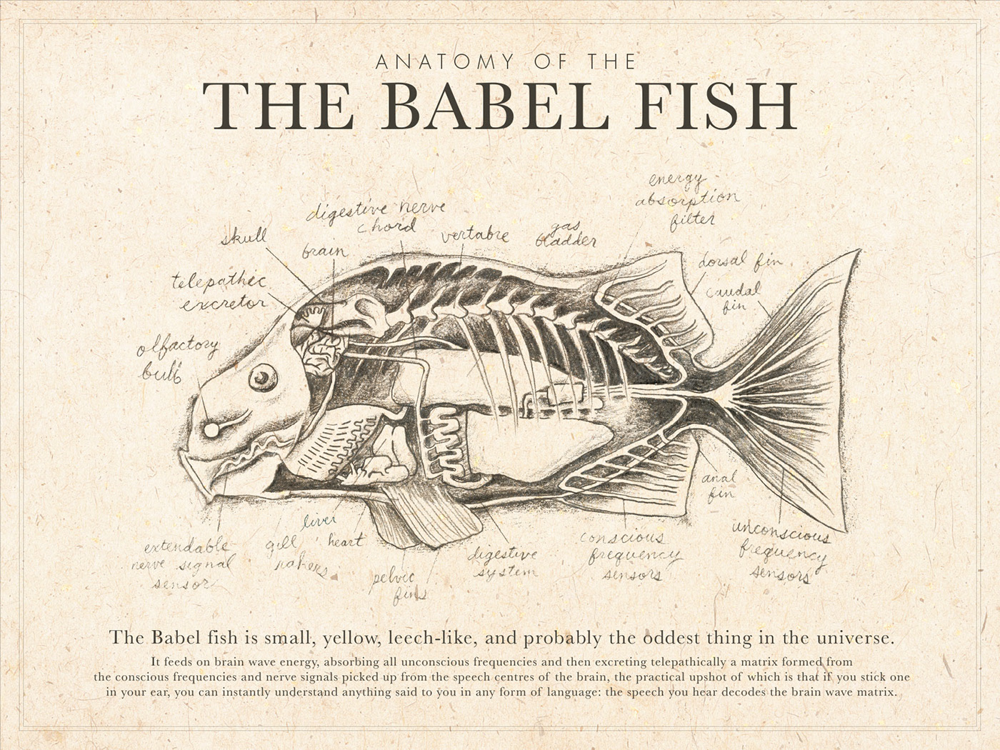

Documentos dinâmicos
Apresentação
Imagine a seguinte situação: após uma série de atualizações em seu manuscrito, com análises refeitas e resultados e discussões revisados, você percebe que um valor apresentado no meio do texto passou despercebido e permaneceu desatualizado. Esse tipo de situação não é difícil de imaginar, especialmente em um contexto no qual lidamos com grandes volumes de dados, análises cada vez mais complexas e múltiplas rodadas de revisão. Embora indesejável, é natural que algum detalhe acabe passando despercebido ao longo desse processo.
Nesta seção, apresento uma breve introdução a um tipo de documentação que pode ajudar a evitar situações como essa: os documentos dinâmicos. Especificamente, serão apresentados dois formatos de documentos dinâmicos que têm sido cada vez mais utilizados: R Markdown e Quarto. O foco será dado ao Quarto, por ser uma alternativa mais moderna e versátil, mas a lógica e o potencial de uso são semelhantes em ambos. A principal característica desses documentos é a possibilidade de integrar texto, código, dados e resultados em um único arquivo, permitindo que as análises e os elementos do documento sejam atualizados de forma consistente sempre que os dados ou códigos subjacentes forem modificados. Ivimey-Cook et al. (2023) e Buckley et al. (2025) apresentam algumas das vantagens do uso de documentos dinâmicos, como o Quarto e Rmarkdown, em estudos e projetos em Ecologia e Evolução.
O que são documentos dinâmicos
Os documentos dinâmicos são arquivos que contêm informações que podem ser atualizadas automaticamente à medida que os dados ou conteúdos que os compõem são modificados. Diferentemente dos documentos estáticos, eles podem integrar texto, dados, análises e visualizações de forma dinâmica, de modo que alterações nos dados de origem sejam refletidas automaticamente no documento final.
Outra característica que torna os documentos dinâmicos especialmente interessantes é a possibilidade de produção de documentos em linguagens que nós nem sabemos escrever. Por exemplo, não sei html, mas a produção de sites utilizando esta linguagem é possível através do uso de documentos dinâmicos com algumas outras ferramentas adicionais que veremos mais adiante. Para quem gosta da famosa trilogia de cinco livros do grande Douglas Adams, O Guia do Mochileiro das Galáxias, tanto o Quarto quanto o Rmarkdown, juntamente com os pacotes knitr, pandoc, funcionam como o peixe Babel: mesmo que você não fale (neste caso, escreva) uma dada língua, o peixe faz o trabalho de tradução em outra língua para você (Figura 1). A vantagem é que com o Quarto e Rmarkdown não há nenhuma necessidade de introduzir nada desagradável na sua orelha.
Tanto em Rmarkdown quanto em Quarto nós utilizaremos para escrita de texto, principalmente o Markdown. Markdown é um tipo de linguagem de utilizada para estruturar textos simples usando símbolos comuns como #, *, entre outros. No contexto dessa disciplina utilizaremos essa linguagem principalmente para estruturar arquivos README e documentos dinâmicos.
Quarto
Quarto é uma aplicação programática programa open source que possibilita a produção de documentos dinâmicos que combinam códigos, resultados, textos e vem cada vez mais sendo utilizado para comunicação científica. Os documentos produzidos com o Quarto tem alto potencial de reprodutibilidade (Buckley et al. (2025)) e podem ser utilizados com diferentes propósitos, desde a simples produção de scripts de análises que combinam texto e pedaços de código até a produção de materiais como sites, apresentações, dashboards, livros ou até mesmo artigos completos.
Nessa seção irei mostrar as funcionalidades básicas de um documento Quarto, como podem ser utilizados e suas principais características. Grande parte desse material é voltado para o uso básico do Quarto. Para maiores detalhes e aprofundamento recomendo a leitura do capítulo sobre Quarto do livro R for Data Science.
Rmarkdown
Rmarkdown é um tipo de arquivo utilizado para produção de documentos dinâmicos, tal como o Quarto, visto na seção anterior. Da mesma maneira, o Rmarkdown possibilita misturar texto e códigos em um mesmo documento, que pode ser gerado em diferentes formatos (incluindo o html). A diferença entre Quarto e Rmarkdown está principalmente na maior versatilidade do primeiro em termos de diferentes linguagens de códigos que podem ser inseridos no documento, bem como a variedade de formatos de documentos que podem ser produzidos.
Anatomia geral
Um documento em quarto
Rmarkdown
Slides da aula
Aqui você encontra os slides apresentados em aula sobre esse tópico
Referências
Buckley, Yvonne M., Richard Bardgett, Rowena Gordon, Amy Iler, Pierre Mariotte, Samantha Ponton, e Andy Hector. 2025. “Using dynamic documents to mend cracks in the reproducible research pipeline”. Journal of Ecology 113 (2): 270–74. https://doi.org/10.1111/1365-2745.14454.
Ivimey-Cook, Edward Richard, Joel L. Pick, Kevin Bairos-Novak, Antica Culina, Elliot Gould, Matthew Grainger, Benjamin Marshall, et al. 2023. “Implementing Code Review in the Scientific Workflow: Insights from Ecology and Evolutionary Biology”. EcoEvoRxiv: EcoEvoRxiv. https://ecoevorxiv.org/repository/view/5393/.